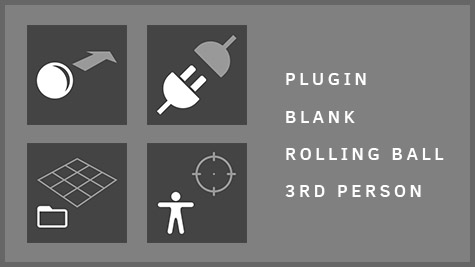
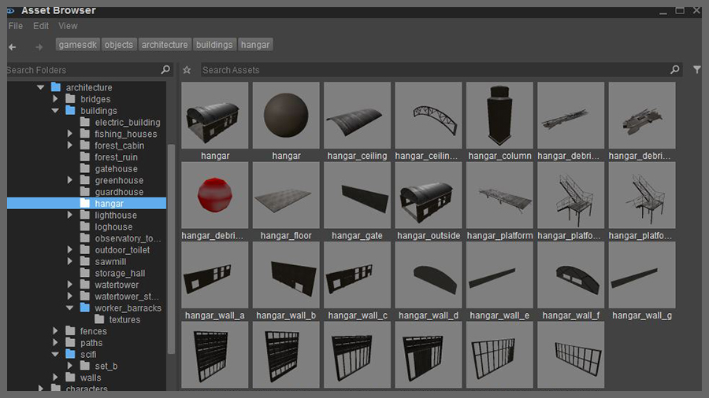
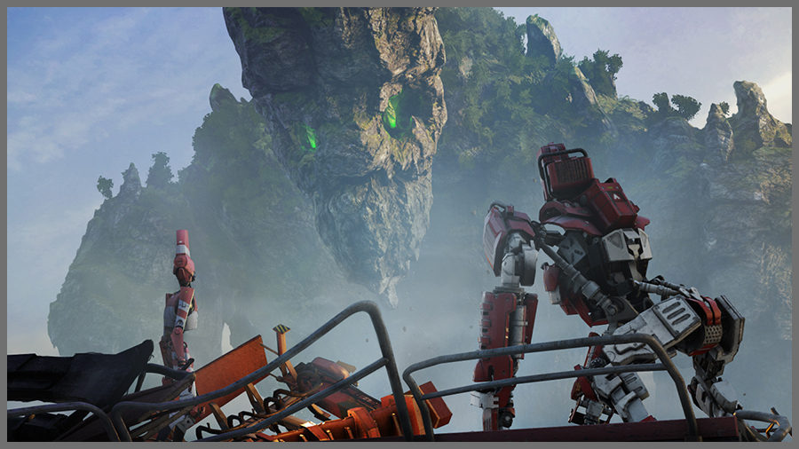

5.4 Обзор
Добро пожаловать в наше последнее крупное обновление, CRYENGINE 5.4. Мы знаем, что создание заняло long времени, но мы уверены, что вы с нами согласитесь — ожидание того стоило.
Мы внесли более 960 улучшений и исправлений и добавили множество новых функций в CRYENGINE 5.4, в том числе; Интеграция Substance для чтения архивов материалов и манипулирования входными текстурами с помощью графиков в редакторе. Мы также расширили набор функций системы ландшафта, которая позволяет гораздо лучше сочетать ландшафт и объекты на вашем уровне. Мы добавили все новая поддержка Vulkan API и функция Entity Components (включая некоторую документацию по вариантам использования). Также в CRYENGINE 5.4 добавлены функции Extended Detail Bending, 2 совершенно новых шаблона C# и обновления ранее представленной системы активов, которая теперь обеспечивает улучшения и расширенное использование различных инструментов, с созданием миниатюр и совершенно новым отслеживанием зависимостей.
Продолжая в том же духе, мы также представили функцию запроса на включение через GitHub, которая позволяет нашему замечательному сообществу CRYENGINE сотрудничать с нами в улучшении CRYENGINE. Наконец, мы также представили шейдер области просмотра Substance, программу Ultimate Text Saver Photoshop, более 30 новых пресетов частиц, несколько новых методов сглаживания, связывание объектов через Level Explorer и, наконец, что не менее важно, обновленную документацию для инструментов запуска проекта. Поэтому мы уверены, что вам не терпится начать — так что скачайте CRYENGINE 5.4 на Github. HERE!
Авторы
Мы хотели бы выразить огромную благодарность следующим пользователям за их ценный вклад в создание версии 5.4 CRYENGINE.
- Шивам Мистри
- шербетсэндвич
- гдебан
- одновспышка
- Хиликс
- охунос
Разделы
Изменения интерфейса кода
Для получения дополнительной информации см. Важная информация CRYENGINE 5.4. Изменения данных и кодастатья.
Если вы обновляетесь с CRYENGINE 5.3, прочтите эту тему: Миграция с CRYENGINE 5.3 на CRYENGINE 5.4.
Основные моменты выпуска
Интеграция веществ
Как внутри, так и снаружи мы видели, как индустрия приняла концепцию использования процедурного создания текстур для расширения использования отдельных ресурсов. В течение некоторого времени наши внутренние команды активно использовали Substance в своем рабочем процессе, поэтому это логичное дополнение, которое будет поддерживаться в нашем редакторе Sandbox.
Благодаря этой интеграции мы используем файлы Substance Archive (*.sbsar) для создания экземпляров Substance Graph и генерации на их основе текстур. Важно помнить, что реализация CRYENGINE не выводит выходные данные графа напрямую из графа вещества, а скорее предварительно сконфигурированные выходные данные текстуры, которые используют выходные данные графа вещества в качестве входных данных. Также важно иметь в виду, что архив все равно необходимо создать внутри Substance Designer, где свойства затем будут доступны редактору Sandbox через архив для получения модульного конечного результата.
Обновления системы ландшафта
CRYENGINE 5.4 добавляет несколько новых функций ландшафта. Объекты теперь можно плавно смешивать с ландшафтом. Это значительно расширяет возможности существующих инструментов редактирования ландшафта, обеспечивая гораздо более высокий уровень реализма, нависающие скалы и гораздо больший уровень гибкости.
Выбранные сетки объектов копируются на ранней стадии в сетку карты высот. стать бесшовной частью местности. В то время как интегрированные объекты поддерживают большинство свойств карты высот и даже материалы трехмерного ландшафта.
Кроме того, мы вводим мягкий тест глубины для материалов ландшафта, который позволяет плавно смешивать ландшафт и объекты на ландшафте.
Кроме того, в версии 5.4 мы включили автоматический фильтр высоких частот в шейдере — это устраняет дополнительный и обременительный шаг для пользователей, который относился только к материалам ландшафта. Теперь один и тот же файл диффузной текстуры можно использовать для материала ландшафта и других шейдеров.
Вы даже можете расширить это, используя новый флаг материала «Использовать оригинальную диффузную карту», который позволяет вам полностью согласовывать внешний вид материалов ландшафта и материалов объектов.
Поддержка Вулкана API
Версия 5.4 включает бета-версию средства рендеринга Vulkan, которая будет сопровождать нашу прошлогоднюю реализацию DX12. Vulkan — это кроссплатформенная программа для 3D-графики и вычислений API, которая позволяет разработчикам создавать высокопроизводительные приложения для 3D-графики в реальном времени со сбалансированным использованием CPU/GPU.
В выпуске 5.4 поддержка Vulkan в CRYENGINE будет совместима только с проектами на PC, но мы планируем обеспечить дополнительную поддержку Android в будущем.
Чтобы включить рендеринг Vulkan, вам нужно либо добавить "r_driver=вк" в свой system.cfg или добавьте «name»: «r_driver», «value»: «vk» в часть «console_variables» файла .cryproject. сделай кИмейте в виду, что вам также необходимо локально запустить удаленный компилятор шейдеров, поскольку от этого шага зависит средство рендеринга.
Компоненты сущности
Давней проблемой CRYENGINE была зависимость от игрового кода для раскрытия объектов на вашем уровне и управления ими. Система Entity Component System CRYENGINE обеспечивает модульный и интуитивно понятный способ создания игр. Технология работает как на уровне системы, так и на уровне объекта.
Модель взаимодействия (в редакторе Sandbox) позволяет разработчикам создавать пустые (пустые) контейнеры сущностей, которые, в свою очередь, содержат расширенную игровую логику, завернутую в определенные компоненты. Некоторые примеры базовых компонентов: сетка, освещение, ограничения и даже контроллеры персонажей. С помощью этих типов компонентов пользователи могут разрабатывать префабы, которые дизайнеры уровней могут размещать на протяжении всей игры как для стандартизации, так и для использования Schematyc для запуска и обновления событий.
Чтобы помочь сообществу разобраться с недавно представленной функцией Entity Components, наши разработчики написали документацию по вариантам использования Entity Component. Пользователей CRYENGINE могут особенно заинтересовать два варианта использования объединения компонентов 1 — RigidBody и "Частицы и 2 коллекционирования" и PowerUps, которые показывают, как можно комбинировать различные компоненты для создания великолепных эффектов. Документация будет расширена в ближайшие месяцы, так что следите за дальнейшими обновлениями.

Расширенная гибка деталей (Robinson Tech)
В версии 5.4 был обновлен новый переключатель «Расширенный изгиб деталей», который можно найти в шейдере растительности. История этой функции взята из Crytek. Робинсон: Путешествие разработки и о том, как нам нужно было более точное и физически зависимое решение для гибки нашей растительности.
Эта функция предоставляет художникам гораздо больший контроль над детализацией изгибов ветвей деревьев. Например, эта новая функция изгиба позволяет не только совершать небольшие микроперемещения листьев, но и целых ветвей деревьев или кусков травы. Так, например, художники теперь могут иметь один большой комок травы с поэтапной анимацией, это позволяет движению выглядеть гораздо более естественным. Помогая в вариациях, мы также применяем текстуру шума, нанесенную на карту мирового пространства, чтобы имитировать случайный ветерок для еще большего разнообразия в движении.

Шаблоны С#
Мы добавили следующие шаблоны на C#:
- Плагин С#
- С# от третьего лица
Продолжая усовершенствовать программу запуска, мы также расширили выбор шаблонов, чтобы еще больше упростить настройку и работу с CRYENGINE. Несколько вещей были перенесены из нашего арсенала C++, включая шаблоны плагинов и 3-го лица в версии C#.
Мы планируем добавить больше шаблонов в CRYENGINE в будущих выпусках. Это не только продемонстрирует начальную часть создания игры, но и покажет окончательные примеры, которые проведут вас через каждый этап разработки игры.

Обновления системы активов
В версии 5.3 мы выпустили базовую реализацию новой системы активов, которая позволила пользователям напрямую взаимодействовать со своими ресурсами и каталогами. Мы знаем, что самое оптимальное решение — никогда не прикасаться к Проводнику Windows, чтобы добиться желаемых изменений, и новые обновления Asset System, безусловно, приближают нас на шаг ближе к этой реальности. В ходе продолжающейся разработки мы добавили прямую поддержку перетаскивания для браузера активов, а также интеграцию других инструментов (Material Editor, Particle Editor).
В версии 5.4 мы также представили совершенно новый граф зависимостей, который помогает изменять пути или управлять зависимостями.
Мы также представили функцию динамического переключения CGF. Это дает дополнительное преимущество, заключающееся не только в прямом просмотре миниатюр (для предварительного просмотра ресурса), но и в возможности выбора ресурса, который лучше всего соответствует вашим потребностям. Эта разработка также позволяет вам сократить список активов и, таким образом, помогает найти лучший актив для вашего конкретного сценария.

CRYENGINE Запросы на извлечение
В конце июля мы представили сообществу CRYENGINE запросы на извлечение CRYENGINE (мы посчитали, что об этом стоит еще раз упомянуть в обзорах выпуска). Эта возможность доступна через GitHub, fили общую информацию, предоставленную GitHub относительно запросов на включение, см. здесь. Запросы на извлечение.
Мы также написали документацию по CRYENGINE, чтобы помочь сообществу CRYENGINE отправлять запросы на включение.
Мы также хотим воспользоваться этой возможностью, чтобы сказать огромное спасибо всем членам нашего сообщества CRYENGINE за их вклад в помощь нам в разработке движка. Пожалуйста, продолжайте присылать свои отзывы (но по обычным каналам).
Шейдер видового экрана вещества
Также в версии 5.4 мы представляем вам собственный шейдер Substance, который был разработан в соответствии с затенением области просмотра программного обеспечения Substance Designer и Painter от Allegorithmic. Чтобы загрузить инструмент и получить более общую информацию, перейдите по ссылке под изображением справа.
Photoshop Оптимальное сохранение текстур
Также в версии 5.4 мы представляем расширение для Photoshop — Ultimate Texture Saver. Эта функция была разработана, чтобы значительно облегчить жизнь художникам по текстурам и заменяет 8 отдельных файлов всего одним. Чтобы загрузить инструмент и получить более общую информацию следовать за ссылка справа. Мы надеемся, что вы сможете насладиться роскошью беспрепятственной обработки всех ваших карт текстур в одном файле Photoshop.
Пресеты частиц
Также в версии 5.4 мы представляем вам библиотеку пресетов Particle Editor. Эта новая функция включает в себя полный список предопределенных эффектов частиц, таких как взрывы, огонь, угли и дым, которые можно добавить на ваш уровень с самого начала. Эти эффекты затем служат основой для создания гораздо более сложных эффектов частиц.
Для получения более подробной информации о библиотеке пресетов Particle Editor перейдите по ссылке справа.
Сглаживание
Также в этой версии 5.4 мы представляем некоторые новые методы сглаживания, которые еще больше улучшат качество графики. Несмотря на то, что существует целый ряд различных методов сглаживания, поиск эффективной реализации, обеспечивающей отличное качество, остается одной из самых больших проблем при рендеринге. Это еще более справедливо для приложений VR, где неровные края и ползущие пиксели могут вызвать серьезный дискомфорт у зрителя и где используемые методы рендеринга должны работать в рамках очень ограниченного бюджета производительности. На данный момент мы поддерживаем следующие методы:
- SMAA и временное сглаживание
- Временная суперсэмплинг (TSAA)
- Суперсэмплинг
Для получения дополнительной информации о сглаживании перейдите по ссылке справа.

Связывание объектов (через Level Explorer)
Также добавлено, теперь вы можете добавить объекты в группу и связывайте их через Level Explorer, для получения дополнительной информации смотрите GIF или перейдите по ссылке справа.
Обновленная документация по инструментам запуска проектов
Наконец, в версии 5.4 мы представляем вам обновленную документацию по инструментам запуска проектов. Мы сосредоточились, в частности, на команде «Сборка пакета», которая теперь позволяет вам быстрее распространять файлы, не задаваясь вопросом, что добавить и удалить в окончательной сборке. Для получения дополнительной информации перейдите по ссылке справа.
Анимация
Общая анимация
- Исправлено: (Средство рендеринга) Сбой при выборе 8-весовой вычислительной оболочки.
- Исправлено: Предоставьте возможность включения взаимоисключающих обновлений видового экрана (CT, MANN, LevelEditor) — доступно через «Настройки» -> «Видовой экран». Следовательно, производительность инструментов (например, CT, MANN) повышается при загрузке большого уровня.
- Исправлено: (CharacterTool) Время прокрутки — использовать все активные слои анимации для предварительного просмотра (аналогично «нормальному» режиму воспроизведения).
- Исправлено: (Character Tool) Улучшена сериализация псевдопримеров и аннотаций blendspace в Character Tool GUI.
- Исправлено: Ошибка в кэше поиска структуры каталогов, из-за которой файлы анимации не могут быть правильно обнаружены при включенном режиме ca_useIMG_CAF.
Character Tool
- Исправлено: Сбой в условиях гонки сигнала/слота, вызванный тем, что в PropertiesPanel::m_propertyTree иногда пытались вернуться к объекту с истекшим сроком действия при загрузке/перезагрузке файлов символов. Дерево свойств теперь безопасно обновляется в последующем обработчике OnExplorerSelectionChanged.
- Исправлено: Ошибка, из-за которой раздел «Дополнительное извлечение» не работал при изменении зависимых свойств пространства смешивания. Список параметров теперь ограничен только теми, которые поддерживают извлечение.
- Исправлено: Проблема с полями ввода в разделе «Слои анимации» не обновлялась должным образом в определенных сценариях при редактировании пространств смешивания.
- Зафиксированный: Улучшена сериализация переопределений параметров в разделе «Примеры». Размер полей значений был скорректирован. Добавлены метки с названиями соответствующих параметров. Переопределения значений теперь правильно ссылаются на типы своих параметров по идентификаторам, а не по индексам, и сохраняются при изменении зависимых свойств пространства смешивания, чтобы смягчить различные неинтуитивные варианты поведения.
- Исправлено: Проблема со свойствами слоя анимации и свойствами пространства смешивания, отображающими разные имена для одних и тех же параметров. Удалены дублированные сопоставления параметров/имен. Удален флаг неиспользуемого параметра.
- Исправлено: Множественные ошибки сериализации макета и упрощенная логика сериализации. Размер окна теперь правильно восстанавливается после закрытия Character Tool и его повторного открытия. Сброс макета теперь восстанавливает геометрию закрепленных виджетов по умолчанию поверх их композиции.
- Исправлено: Проблема, из-за которой Character Tool не возвращался к своим открытым ресурсам при ответе «нет» в диалоговом окне несохраненных изменений.
- Исправлено: Проблема с устаревшими записями анимации, запрашиваемыми для предварительного просмотра параметров blendspace. Удалена пустая строка из имен параметров blendspace, чтобы устранить распространенную ошибку, возникающую при перезагрузке blendspace.
- Исправлено: Решена проблема в Character Tool, из-за которой индикатор измененного содержимого иногда не исчезал при сохранении.
Mannequin
- Исправлено: Проблема с тем, что редактор Mannequin иногда переставал отвечать на запросы в течение длительного периода времени при наведении курсора мыши на его окно.
- Исправлено: Несколько вариантов выбора клавиш в редакторе переходов.
- Исправлено: Проблема с некоторыми операциями редактирования в редакторе переходов, которые случайным образом влияли на клавиши, которые не были выбраны пользователем.
- Исправлено: Потенциальный сбой в редакторе переходов из-за невозможности удаления обязательных ключей из дорожки свойств перехода. Опция удаления контекстного меню теперь правильно выделена серым цветом для всех неизменяемых клавиш.
- Изменено: Отключен выбор ключа по умолчанию — выполняется при открытии редактора переходов.
AI
AI Система
- Рефакторинг: Установка самой последней версии по умолчанию для версии navmesh raycast.
- Оптимизировано: Визуализация навигационной сетки и добавлен новый CVar «ai_NavmeshTileDistanceDraw».
- Исправлено: Узел дерева поведения QueryTPS не проверял наличие eTPSQS_Error, поэтому в редких случаях утверждение не удавалось.
- Исправлено: Игрок больше не регистрировался в AISystem после десериализации уровня при возрождении после смерти, поэтому враг AI больше не сможет атаковать игрока.
UQS
- Исправлено: Изменены все места, которые по-прежнему полагались на имена элементов вместо GUID элементов. Добавлена концепция типа запроса по умолчанию через UQS::Core::IUtils::GetDefaultQueryFactory (для создания нового запроса в редакторе Sandbox).
Аудио
Аудио Общие
- Новое: Добавлен компонент предварительной загрузки.
- Новый: Добавлен компонент прослушивателя и исправлен прослушиватель для ModelViewPort.
- Исправлено: Глобальные изменения не были применены в Wwise 2017.1.0.
- Исправлено: Включайте поддержку HRTF на базе Oculus, только если присутствует Oculus SDK.
- Исправлено: Удалены методы интерфейса из интерфейса IAudioSystem.
- Исправлено: Утверждение, при котором дисплей отладки пытался получить доступ к значению adaptiveOcclusion до того, как оно было определено.
- Исправлено: Изменение значений AudioSpot, используемых в объекте SCHEM, а затем переход в игру приводило к сбою при выходе.
- Изменено: Wwise SDK обновлен до версии 2017.1.1, сборка 6340.
- Изменено: Студия FMOD API обновлена до версии 1.09.06.
Ядро/Система
Общие сведения о двигателе
- Оптимизировано: Улучшена производительность помощников/значков компонентов сущностей в редакторе Sandbox.
- Исправлено: Невозможность изменить тип компонента сетки во время выполнения.
- Исправлено: Невозможность повторно активировать компонент частиц без перезагрузки, если частица была отключена по умолчанию.
- Исправлено: В компоненте камеры отсутствуют помощники выбора.
- Исправлено: Индикатор отсутствия размера компонента Environment Probe.
- Исправлено: CAdvancedAnimationComponent::SetMotionParameter не учитывает переопределения параметров движения, поступающие из систем более высокого уровня.
- Исправлено: Не отвечающие переходы фрагментов при вызове CAdvancedAnimationComponent::QueueFragment. Исправлена связанная с этим проблема с утечкой памяти.
- Исправлено: Невозможность отключить столкновения на компонентах физических примитивов.
- Исправлено: Сетка и примитивные компоненты используют неверные идентификаторы слотов объектов.
- Исправлено: Объекты Schematyc не запускают стартовый узел при динамическом создании после начала игрового процесса.
- Исправлено: CEntity::PhysicalizeSlot не передает пользовательский материал слота вновь созданной физической части.
- Зафиксированный: Компоненты геометрии перестают отбрасывать тени при дублировании.
- Исправлено: Сбой, вызванный висячим указателем в компоненте замены.
- Исправлено: Свойства похожих объектов не могут отображаться, если они не являются копиями.
- Исправлено: Значок «Открыть редактор» не отображается рядом с полями частиц.
- Исправлено: Невозможность указать материал для компонентов геометрии.
- Исправлено: Некоторые компоненты не предоставляли Schematyc все функции.
- Исправлено: Сбой, вызванный неправильным отключением неактивных камер.
- Исправлено: Ввод контроллера не работает с компонентом ввода по умолчанию.
- Исправлено: Компонент ввода неправильно регистрирует несколько групп ввода.
- Исправлено: Панель PS4 не работает на машинах с Windows.
- Исправлено: Quat не был правильно инициализирован в отладочных сборках.
- Исправлено: PoolAllocator выбирал выравнивание без степени двойки для некоторых размеров шрифта.
- Исправлено: Новые компоненты на основе Schematyc, основанные на устаревшей системе IID — функция IID больше не требуется для новых компонентов.
- Исправлено: Регистрация пакета Schematyc не отменяется — предотвращает возможный сбой при завершении работы.
- Исправлено: Проблема, из-за которой во время загрузки компоненты создавались и инициализировались последовательно, а не в одном пакете, а затем инициализировались.
- Исправлено: Событие ENTITY_EVENT_PHYS_POSTSTEP никогда не отправляется.
- Исправлено: Статическое связывание (OPTION_STATIC_LINKING) с использованием параметра компоновщика /WHOLEARCHIVE Visual Studio 2015, чтобы предотвратить оптимизацию компоновщика без заводских регистраций static.
- Исправлено: Предупреждение «Попытка выполнить звуковой триггер в (0,0,0)...» при воспроизведении звука на слое обработки в предварительном просмотре Mannequin.
- Исправлено: Асинхронное искажение времени на OSVR.
- Исправлено: Некоторые случаи, когда ресурсы Engine не загружаются.
- Изменено: Исключите некоторые пути, которые отсутствуют в //ce/main_stabilisation, но находятся в //ce/main (это предотвратит проблемы с интеграцией).
- Изменено: Исправьте недопустимые комментарии в компонентах по умолчанию.
- Изменено: Улучшите разметку license.md.
- Изменено: Обратите внимание, что запросы на включение должны быть сделаны для ветки «pullrequests».
- Изменено: Внедряйте модульные тесты компонентов, чтобы избежать регресса старых ошибок, которые продолжают появляться.
Общий
- Рефакторинг: Устаревшие макросы, создающие GUID из двух целых чисел.
- Рефакторинг: Унифицируйте преобразования CryGUID из строки и в строку.
- Рефакторинг: Разрешить создание спецификации сериализации enum для уже объявленных перечислений.
- Оптимизировано: Удалить CryGUIDHelper.
Система
- Исправлено: Запуск двигателя без проекта, когда миграция была невозможна.
- Исправлено: Невозможно выполнить консольные команды из файла CryProject.
- Исправлено: Сбой при запуске, если файл .cryproject не существует.
- Исправлено: Невозможность загрузки .cryproject с диска в релизных сборках.
- Исправлено: Двоичные узлы XML, не поддерживающие клонирование — теперь возвращают себя, поскольку узлы в любом случае доступны только для чтения.
- Исправлено: Освобождение конвейера рендеринга при освобождении средства рендеринга.
- Исправлено: Загрузка более новых версий .cryproject приводит к полному override файла с фиктивными значениями.
- Исправлено: Ни один каталог ресурсов не обнаруживает ошибку при переходе от устаревшего рабочего процесса sys_game_folder к .cryproject.
- Исправлено: Движок автоматически запускался без папки проекта и/или ресурсов — теперь пользователю отображаются ошибки.
- Исправлено: Подтвердить при подключении удаленной консоли.
- Зафиксированный: Корень движка добавляется как пак-мод. В результате постоянный поиск любых файлов в корне движка приводил к замедлению работы и добавлению несвязанных файлов в файловые браузеры. Дополнительно добавлен псевдоним %EDITOR% pak, чтобы избежать будущих проблем с загрузкой ресурсов редактора.
- Исправлено: Плагины не выгружаются в порядке, обратном загрузке.
- Исправлено: (PS4) Дескрипторы кубических карт.
- Исправлено: Взаимная блокировка удаленной консоли при выключении.
- Изменено: Подписывать двоичные файлы и библиотеки DLL.
WAF
- Изменено: Небольшие изменения форматирования в waf_branch_spec.py.
CMake
- Новое: CMake теперь загружает SDK через GitHub, если загрузка невозможна.
- Исправлено: Измененные параметры CMake для Vulkan и HRTF не были отражены в CMake GUI. Дополнительно исправлено развертывание файлов DLL PortAudio во время выполнения.
- Изменено: Подписывать двоичные файлы и библиотеки DLL.
- Изменено: Добавлены параметры VS2017 в cry_cmake.
- Изменено: Измените пакетные файлы Win32 и Win64, чтобы разрешить сборку как VS2015, так и VS2017.
Общие действия
- Исправлено: Постоянная отладка не работает в редакторе Sandbox.
- Исправлено: Сохранения можно загружать без написания расширения файла в консоли.
Flowgraph
- Исправлено: Быстрый выбор для FG-узлов не работает.
- Исправлено: (CECR) Сбой при использовании Entity:SpawnArchetype в новом проекте, не использующем устаревший интерфейс IGame.
- Исправлено: (CECR) Возможный сбой при получении игрового токена, если график имеет значение null.
Игра
- Исправлено: Неправильный звук воспроизводится при первом входе на карту.
- Исправлено: Где в многопользовательских играх прослушиватель звука не активировался повторно после killcam. Убедились, что сущности, которые также являются прослушивателями звука, могут создавать дополнительные аудиообъекты.
- Исправлено: Больше не нужно пытаться вызвать отсутствующую функцию скрипта.
- Изменено: Обновите файл .cryproject, чтобы он указывал на каталог «GameSDK».
Схема
- Новое: Откройте узлы Vector3 Project и Reflect.
- Новое: Откройте узлы отрицания и подписи.
- Оптимизировано: Удалена интеграция с Flowgraph - к сожалению, она слишком нестабильна из-за неправильной реализации событий Flowgraph.
- Исправлено: Компоненты объекта схемы создаются и инициализируются последовательно, а не создаются в одном пакете, а затем инициализируются.
- Изменено: Удалите поддержку установки необработанных элементов компонента через узел Set — напрямую изменяемые данные дизайнерского набора, и это повлияет на то, что сохраняется на диске. Функциональность будет вновь представлена в будущем обновлении.
Шаблоны
- Исправлено: Пустой и плагин template не регистрирует созданные пользователем компоненты сущности.
- Исправлено: (ThirdPersonShooter) Предупреждение о проблеме со спамом, возникающей во время движения камеры из-за увеличения инерции при переключении состояния тегов Mannequin.
- Исправлено: ReflectType на CBulletComponent во всех шаблонах.
- Исправлено: ReflectType на CBulletComponent в ThirdPersonShooter template.
- Исправлено: Восстановите функцию сетевой синхронизации в RollingBall template.
- Изменено: (ThirdPersonShooter) Добавлен простой фильтр сглаживания ввода данных мышью для смягчения резких движений при повороте.
Графика и рендеринг
Общий рендерер
- Рефакторинг: Замена всех CryMakeUnique на stl::make_unique.
- Исправлено: (Шейдеры) Исправлена ошибка «Не удалось скомпилировать шейдер HW Hair@HairPS».
- Исправлено: Проблема с созданием кубической карты.
- Исправлено: Мерцающая отладочная информация в редакторе Sandbox.
- Исправлено: Экспорт декалей с проблемой материала nullptr.
- Исправлено: Отключено многопоточное создание ресурсов, чтобы изменения sys_spec прошли успешно.
- Исправлено: Освободите/создайте доступ к nullptr при завершении работы.
- Исправлено: Несоответствие разрешения буфера глубины при инициализации конвейеров.
- Исправлено: Убедитесь, что набор материальных ресурсов для CREFogVolume содержит допустимые ресурсы.
- Исправлено: Плагин OpenVR аварийно завершает работу при закрытии GameLauncher.
- Исправлено: Лаунчер не закрывается должным образом при выходе.
- Исправлено: Отключите фиксацию глубины на PS4, чтобы избежать зависания GPU.
- Исправлено: Отключение графического конвейера.
- Исправлено: Изменена верхняя граница удаления обратного вызова, чтобы предотвратить переполнение стека.
- Исправлено: Доступ к Nullptr при сбое создания шейдера.
- Исправлено: Недействительность указателя текстуры с помощью обратного шаблона слабого указателя.
- Исправлено: Неустранимая ошибка, когда средство визуализации не может создать свое устройство. Он также показывает правильное сообщение, когда GPU не Vulkan используется в сочетании с средством рендеринга Vulkan.
- Исправлено: Предупреждение в NC после загрузки карты (текстура не существует: texelspermeter.dds).
- Исправлено: Переключение области просмотра при включенном AA.
- Исправлено: Запретите предварительное кэширование шейдеров на Vulkan и PS4 — на этих платформах мы не можем компилировать отдельные шейдеры без макета ресурсов.
- Исправлено: Суперсэмплинг и даунсемплинг слишком темные.
- Исправлено: Рендеринг видового экрана «за кровотечение».
- Исправлено: Нарушение спецификации API при изменении размера области просмотра в редакторе Sandbox.
- Исправлено: Выделите проход PSO.
- Исправлено: SelectionID передает буфер глубины.
- Исправлено: Разрешение глубины сцены для суперсэмплинга.
- Исправлено: Выпуск текстур Луны.
- Исправлено: Удалены утверждения/прерывания отладки.
- Исправлено: Ошибка проверки DX12 при запуске — невозможно получить доступ к обратным буферам, используемым композитором/устройством.
- Исправлено: (Шейдеры) Удалены устаревшие обходные пути hlslcc для невыровненных переменных в буфере констант.
- Исправлено: Формат обратного буфера XBox One.
- Исправлено: Утверждение потоковой загрузки кубической карты.
- Исправлено: Перед использованием очистите цели рендеринга конвейера HDR.
- Исправлено: Числовое кодирование типов текстур - изменить никак нельзя.
- Исправлено: Преобразование материала в сбои из нескольких материалов (Sandbox.exe!CMaterial::UpdateHighlighting).
- Исправлено: Материал грунта неправильно применяется к таким объектам, как сферы в vr_demo.
- Исправлено: Подтвердить при запуске игры/ComputeRenderPass.cpp.
- Исправлено: Чтение прохода повышения дискретизации sRGB.
- Исправлено: Понижение разрешения по Z-цели на XBox One.
- Изменено: Добавлена информация о запуске редактора для компиляции шейдеров, чтобы исправить неясное «зависание» при запуске, когда все шейдеры нуждаются в компиляции.
Вулкан
- Исправлено: Утверждение вызвано тем, что CDeviceTexture::GetLayout не возвращает данных.
3D-движок
- Рефакторинг: Добавлен CVar для управления интеграцией сеток объектов в сетку ландшафта.
- Исправлено: Сбой в LightVolumes, вызванный превышением количества источников света за пределами локального массива. Добавлена константа для лимита.
- Исправлено: Улучшение точности в CSkyLightNishita — потенциально исправляет утверждение.
- Исправлено: Отсутствует реакция UI на функцию «интеграция объектов в сетку ландшафта».
- Исправлено: CVar "e_ViewDistRatioLights" не обновляется.
- Исправлено: (VR) Гарнитура Oculus работает, но в окне GameLauncher.exe отображается только черный экран.
Частицы
- Исправлено: Запретить доступ за пределы массива текстур зеркального зонда.
- Исправлено: Неработающие пресеты. В пресетах сетки теперь по умолчанию используется сфера, а в ленте — антигравитация.
- Исправлено: Сбой из-за нулевого указателя атрибута.
- Исправлено: Исправления в домене TimeSource. Контексты каждого экземпляра теперь всегда имеют доступ к родительским данным. Только данные о возрасте родителей являются «сглаженными по возрасту».
- Исправлено: Ошибка преобразования сериализации.
- Исправлено: Некоторые примеры эффектов в Engine Assets работают правильно.
- Исправлено: Компоненты Particle Entity теперь надежно активируют и деактивируют излучатели, не создавая дубликатов. Эмиттеры больше не порождают частицы, когда они неактивны.
- Исправлено: Восстановлено окружение частиц. Восстановлен параметр Diffuse в масштабе единицы.
- Исправлено: Сериализуйте «включенное» состояние функций.
- Исправлено: Сбой при редактировании частиц GPU. Члены класса переместились для соблюдения правильного порядка уничтожения.
- Исправлено: Восстановлена функциональность AnimBlend и DrawOnTop.
- Исправлено: Звук не воспроизводился, если излучатель был заряжен. Теперь воспроизводится, если эмиттер запускается в любое время в течение его срока службы.
- Исправлено: Возможные сбои, вызванные многопоточной инициализацией данных функции static.
- Исправлено: Эмиттеры не всегда создавали уникальное семя, если они были созданы из Engine.
- Исправлено: События начала/остановки AudioTrigger, вызванные неправильным преобразованием из предыдущего формата.
- Исправлено: Случайное семя не подвергается воздействию параметров появления UI.
- Зафиксированный: Повторно добавлен компонент частиц по умолчанию template.
- Исправлено: AudioTrigger сбой. Ограничение EOcclusionType enum допустимыми значениями.
- Исправлено: Сбой в частицах GPU, вызванный задержкой назначения указателя эмиттера.
- Исправлено: Сбой из-за недавней проверки звука (GetNumResources вернул неправильное значение). Восстановленный объект частицы деактивирует поведение, позволяя частицам выполнять функции остановки звука. Исправлены юнит-тесты после перехода на уникальное переименование.
- Исправлено: Функция AudioTrigger теперь позволяет запускать и останавливать триггеры в одной и той же функции, что делает ее совместимой с другими звуковыми триггерами в движке.
- Исправлено: Сбой при создании уникального имени компонента, обобщенного для работы без ограничений по количеству.
Плагины
- Оптимизированный: Удалите неиспользуемый плагин FPS.
Рендерер PS4
- Оптимизировано: Отрисовка визуализации отладки буфера окклюзии за один вызов отрисовки.
- Исправлено: Обходной путь для утверждения, вызванного численными проблемами вызова DU на RCP на PS4.
- Исправлено: Тесселяция частиц нарушена. Отключите на данный момент, чтобы избежать артефактов рендеринга.
- Исправлено: GPU временные метки.
- Исправлено: Реализуйте нулевые ресурсы.
- Исправлено: Считывание глубины.
С#
C#.Ядро
- Исправлено: Обновлен моно с исправлением возможной проблемы с выключением.
- Исправлено: Сбой при перезагрузке среды выполнения Mono.
- Исправлено: Компоненты C# теперь устанавливают правильное значение по умолчанию при инициализации в SchematycEntity.
- Исправлено: CMonoProperty::Правильно установите запрет передачи типов значений в управляемый код.
- Исправлено: CMonoObject::CopyFrom неправильно копирует ссылочные типы.
- Зафиксированный: Свойства компонента не отображаются в Schematyc.
- Исправлено: Свойства компонента освобождаются, но не уничтожаются.
- Исправлено: Значение по умолчанию для свойств компонента не установлено.
- Исправлено: Указатель объекта недоступен, когда свойства установлены.
- Исправлено: (CECR) Возможен сбой, если класс управляемого плагина был удален.
- Исправлено: (CECR) Сбой во время запуска, если домен плагина не удалось инициализировать.
- Исправлено: (CECR) Сбой при компиляции исходных файлов C# в каталоге ресурсов.
CryMonoBridge
- Рефакторинг: Добавлены GetComponents, GetComponentsWithInterface и GetComponentWithInterface в сущность C#.
Физика
Физика
- Исправлено: Проверьте наличие вызова RWI в разрушенном мире.
- Исправлено: Проблема с загрузкой области океана в physdebugger.
- Исправлено: Игрок не реагирует на изменения гравитации.
- Исправлено: (Компоненты) (Физика) Принудительно активировать компонент твердого тела при запуске уровня, если он «включен по умолчанию».
Система проектов
CryVersionSelector
- Новое: CryVersionSelector теперь запоминает вашу последнюю выбранную платформу.
- Новое: В файл .cryengine добавлено решение Generate Engine.
- Исправлено: CMake открывает неверный исходный каталог.
- Исправлено: CMake устанавливает NMake в качестве генератора вместо Visual Studio.
- Изменено: Сгенерированный CMakelist теперь включает более простой способ переключения цели на Gamelauncher, Server и редактор Sandbox.
- Изменено: Добавлены сообщения об ошибках, если функции Windows используются вне Windows.
- Изменено: Обновлен порядок параметров при щелчке правой кнопкой мыши по файлам .cryproject и .cryengine.
Sandbox
Генеральный редактор
- Новое: Используйте мобильные графические процессоры вместо CPU для рендеринга.
- Новое: (FBX IMPORTER) Добавлена опция создания координат текстуры.
- Новое: (FBX IMPORTER) Добавлена опция вычисления нормалей.
- Исправлено: Sandbox Сбой редактора при удалении/переименовании папки level.pak CLayerSetSwitchNode::OnLoadingComplete.
- Исправлено: Размещение дублированных объектов приводит к значительному падению частоты кадров.
- Исправлено: При открытии и закрытии редактора определений тегов выбор ID теперь сохраняется.
- Исправлено: Макет Mannequin не был сохранен после закрытия.
- Исправлено: Временная шкала в Mannequin иногда терялась между другими панелями.
- Исправлено: Отмена создания объекта растительности теперь приведет к удалению выделения в дереве растительности.
- Исправлено: Проблема с совместной генерацией сущностей без таблиц сценариев.
- Исправлено: Сбой, когда код пытался удалить несуществующий объект и получил доступ к недопустимому указателю.
- Исправлено: Сбой при отображении контекстного меню области навигации.
- Исправлено: Navmesh не обновлялась при редактировании дыр в ландшафте.
- Исправлено: Области навигации снова немного смещены ниже рельефа после их создания.
- Исправлено: Компоненты Public Schematyc, не позволяющие изменять Transform.
- Исправлено: Сделайте «Файл»> «Выход», закройте редактор правильно.
- Исправлено: (TRACKVIEW) Создание ключа добавляет два события в очередь отмены/повтора.
- Исправлено: TRange.IsEmpty может привести к сбою CurveEditor.
- Исправлено: (ENTITY AI) SmartObject Объект рендеринга не меняется в зависимости от типа.
- Исправлено: Диалоговые окна создания/открытия уровня теперь будут создавать папку уровня, если она ранее не существовала.
- Исправлено: Невозможность редактировать и просматривать материал объекта по умолчанию в инспекторе.
- Исправлено: (PREFAB) Свойства префаба не перезагружаются после использования отмены.
- Исправлено: Проблемы с отменой создания слоя папки, включая потенциальный сбой.
- Исправлено: (UI) После регистрации Engine в настройках все цвета становятся черными.
- Исправлено: Возможны сбои, если инициализация двигателя не удалась раньше.
- Исправлено: Фигуры не обновляются сразу после изменения преобразования при использовании колеса мыши.
- Исправлено: Невозможность выбирать объекты, щелкнув их вспомогательный объект, доступный только для редактора.
- Исправлено: (TERRAIN) Океан не виден после изменения размера местности.
- Исправлено: Сбой при попытке отсоединить отдельные объекты от префаба через панель свойств.
- Исправлено: (CECR) Возможный сбой, вызванный возможностью отменить выбор недопустимого слоя.
- Исправлено: (FLOW GRAPH) Частое использование отмены/повтора (после добавления узла) приводит к сбою (Sandbox.exe!CHyperGraph::GetAllEdges).
- Исправлено: Прокрутка колеса мыши при размещении фигуры области навигации приводит к повороту фигуры и задает смещение перемещения точек.
- Исправлено: Дерево объектов в библиотеке префабов сворачивается после размещения префаба.
- Исправлено: Однократное открытие любого окна выбора приводит к мерцанию/перерисовке панели свойств при каждом изменении.
- Исправлено: Утверждение срабатывает при масштабировании объектов на основе компонентов.
- Исправлено: (FLOW GRAPH) Использование «q» для быстрого добавления узла приводит к мгновенному сбою CHyperGraphView::OnKeyDown.
- Исправлено: Значок объекта по умолчанию отображается для объектов с помощниками.
- Исправлено: Восстановление свойств компонента в инспекторе с воссозданием всего объекта.
- Исправлено: Случай, когда компоненты дублировались после отмены удаления объекта.
- Исправлено: Объекты без скриптов перезагружаются при изменении скриптов.
- Исправлено: Сбой при отмене удаления слоя через контекстное меню в проводнике уровней, а затем при выполнении отмены/повтора.
- Исправлено: (TRACKVIEW) Создание ключа добавляет два события в очередь отмены/повтора.
- Исправлено: Перемещение объектов между слоями при большом количестве объектов. Эта проблема может привести к остановке работы редактора Sandbox на неопределенный срок.
- Исправлено: Диалоговое окно «Открыть файл» — сортировка по размеру дает неточные результаты.
- Исправлено: (TRACKVIEW) Трек захвата выдает предупреждение (не удалось завершить захват).
- Исправлено: Неубер-исправление.
- Исправлено: Браузер ресурсов запоминает размер миниатюр и расположение разделителей.
- Исправлено: (TRACKVIEW) Теперь учитывается, какой элемент был нажат при масштабировании и перемещении клавиш, а не привязывается к первой клавише на временной шкале.
- Исправлено: (UI) Развертывание/растяжение панели инструментов/панели значков PFX2.
- Исправлено: (LEVEL EXPLORER) Слои — создание/удаление слоев, не захваченных очередью отмены/повтора.
- Исправлено: (TRACKVIEW) Выбор трека.
- Исправлено: (FLOW GRAPH) В диалоговом окне «Новое действие AI» отсутствует кнопка для создания новой папки.
- Исправлено: (DATABASE VIEW) Счетчик экземпляров префаба.
- Исправлено: (DESIGNER) Номер фрагмента поврежден.
- Исправлено: Сбой при загрузке уровня с открытым Mannequin.
- Исправлено: (PREFAB) Области/формы, точки AI, надписи скрыты в закрытом префабе, который размещается во вьюпорте.
- Исправлено: Отсутствуют настройки в свойствах камеры.
- Исправлено: Сбой при отмене удаления слоя из-за устаревшего указателя слоя.
- Исправлено: Кнопки инструментов CVar на панелях инструментов — теперь имеют заданное для них значение CVar, которое отображается во всплывающей подсказке.
- Исправлено: Изменен стиль отключенных полос прокрутки, чтобы они лучше отражали свое текущее состояние.
- Исправлено: Проблема, из-за которой спам-рассылка по кнопке создания MIP-карты приводила к тому, что экран постоянно становился черным.
- Исправлено: Сбой при отмене/повторном удалении слоя.
- Исправлено: Параметр «Выравнивание по сетке» не работает, если не включена привязка к сетке.
- Исправлено: Проблема в представлении трека, из-за которой, если пользователь не записывал изменения, у объекта был ключевой кадр вращения, и при попытке изменить вращение этого объекта (через панель свойств или инструмент преобразования) вращение по оси ключевого кадра блокировалось. Исправлена аналогичная проблема с масштабом.
- Исправлено: Создание нового уровня с добавленной папкой анимации вызывает ошибки в NC.
- Исправлено: Создание новой карты иногда вызывает утверждение.
- Исправлено: Прокрутка колеса мыши при размещении фигуры приводит к ее вращению и задает смещение перемещения точек.
- Исправлено: Выбор объектов внутри групп ненадежен.
- Исправлено: Невозможность выбирать объекты с сетками простым нажатием на сетку.
- Исправлено: Сбой во время досрочного завершения работы за счет удаления специального поведения при завершении работы.
- Исправлено: (CHARACTER TOOL) Настройка размеров в Blendspace не позволяет изменять значения размеров.
- Исправлено: (CHARACTER TOOL) Теперь папки будут автоматически расширяться при использовании поиска. Также фильтр теперь применяется по мере ввода пользователем.
- Исправлено: Выбор первой анимации ничего не дает, выбор второй воспроизводится автоматически.
- Исправлено: Сбой при немедленном переключении с Area:Solid на Area:ClipVolume или при нажатии на любой из них с нажатой клавишей double.
- Исправлено: Маска выбора не работает для исходной точки навигации AI.
- Исправлено: В редакторе материалов нет выбранного материала после нажатия кнопки «Редактировать материал» на панели свойств.
- Исправлено: Прямоугольное выделение работает правильно для всех объектов.
- Исправлено: (FBX IMPORTER) В импортированном *.fbx с анимацией передвижения отсутствует корневая транслокация.
- Исправлено: Crashhandler не дает возможности сохранить карту.
- Исправлено: Деревья свойств не копируют текст в буфер обмена уровня OS.
- Исправлено: Альфа-палитра выбора цвета не передается в Engine.
- Исправлено: AudioAreas (и некоторые другие устаревшие (прокси) компоненты) больше не экспортировались.
- Исправлено: Сбой инструмента дизайнера при изменении выделения в инструменте сопоставления UV.
- Исправлено: Случайный сбой при быстрой стыковке и отстыковке окон.
- Исправлено: (FBX IMPORTER) Физические прокси имеют неправильное преобразование.
- Исправлено: (TRACKVIEW) На панели свойств отображаются только X-значения ключей.
- Изменено: Редактор контекста теперь называется редактором предварительного просмотра.
Инструменты
Инструменты Общие
- Оптимизировано: Удалите устаревший скрипт, чтобы скопировать Wwise SDK.
- Исправлено: Проблемы с областью просмотра в нескольких инструментах (CT, MANN, Schematyc) — используется неправильный буфер глубины, что приводит к сильным артефактам.
- Изменено: Добавлена поддержка автоматической опции отключения окон сообщений и утверждений.